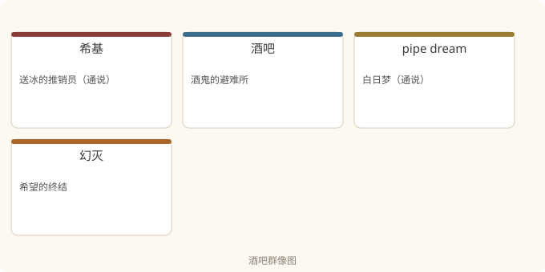

送冰的人来了
一、基本信息
| 作者 | 尤金·奥尼尔 |
|---|---|
| 成书/出版 | 1946年（作者页B272口径：The Iceman Cometh (1946)——'Considered by many to be ONeill's finest work'——页面问答） Eugene ONeill — Encyclopaedia Britannica（百科全书） |
| 国别/地区 | 美国 |
| 时代 | 现当代 · 20世纪 |
| 体裁 | 戏剧 |
| 语言 | 英语 |

酒吧群像图（主题·结构图）
二、创作背景
Britannica（B272）：The Iceman Cometh (1946)——'Considered by many to be ONeill's finest work'（页面问答——B272）。
作者（B272）：四项普利策戏剧奖；1936诺奖。
场景（通说待核）：纽约一间酒吧的酒鬼群像——希基的'福音'与幻灭。
三、内容脉络
希基的到来：酒吧酒鬼们的幻灭——'没有明天'（通说待核）。
四、主要人物表
| 人物 | 身份 | 说明 |
|---|---|---|
| 希基 | 推销员 | （通说待核） |
| 哈里·霍普 | 酒吧主 | （通说待核） |
五、主题与艺术特点
- ' pipe dream'（白日梦）的幻灭（通说待核）。
- 推销员的'福音'：放弃希望即自由（通说待核）。
- 酒鬼群像的悲剧（通说）。
六、影响与评论
- Britannica：'Considered by many to be ONeill's finest work'（B272 页面问答）。
Eugene ONeill — Encyclopaedia Britannica（百科全书） - Britannica：奥尼尔1936诺奖、四项普利策奖（B272）。
Eugene ONeill — Encyclopaedia Britannica（百科全书）
七、阅读建议
难点
- 酒鬼群像的人物表。
- '白日梦'的戏剧概念。
- 《送冰的人来了》（人民文学出版社/湖南文艺出版社版本，通说待核）。
- 英文原版（Yale）。
奥尼尔晚期杰作。
八、待核实
- 1946年首演（Martin Beck Theatre说）核对。
- 希基/哈里·霍普人名核对。
- 'pipe dream'术语核对。
本页主要来源
尤金·奥尼尔的其他收录作品：进入黑夜的漫长旅程